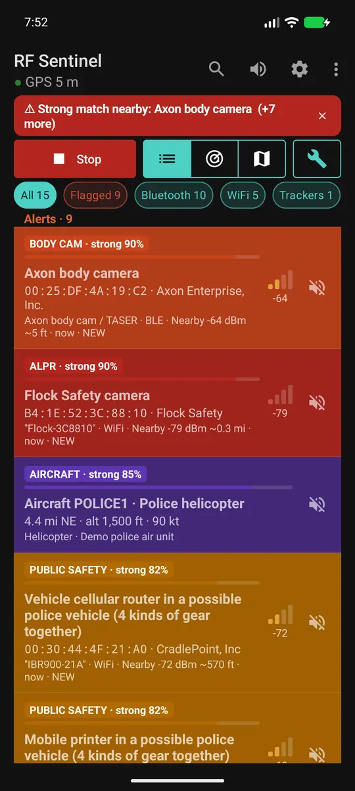
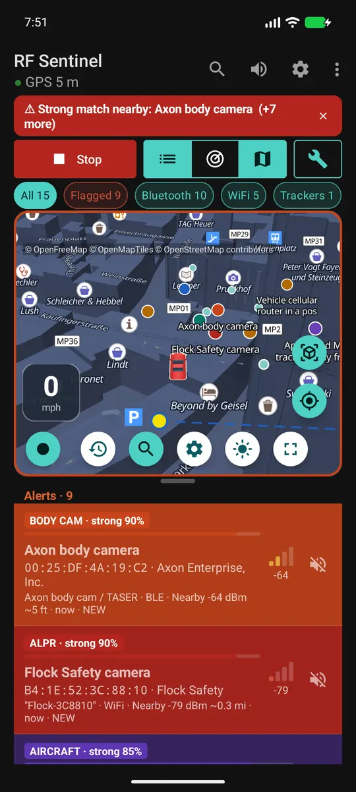

RF Sentinel, détecteur de surveillance pour Android
Une appli gratuite et open source pour Android. Elle écoute les signaux Bluetooth LE et WiFi autour de vous et signale le matériel de surveillance : traceurs qui vous suivent, caméras-piétons de police, drones, lunettes-caméras et signes de fausses antennes relais.
RÉCEPTION SEULESans root · sans compte · sans statistiques d'usage · GPL-3.0 · Android 8.0+
APK signé, publié sur GitHub. Pas sur Google Play. L'appli est en anglais pour l'instant.


Ce que l'appli détecte
| Catégorie | Exemples | Comment |
|---|---|---|
| Traceurs qui vous suivent | AirTag, Google Find Hub, Samsung SmartTag, Tile, Chipolo | Alerte quand un traceur reste avec vous (par défaut 10 min et 800 m) |
| Caméras-piétons | Axon, Motorola VB400, Zepcam, Getac | Identifiants Bluetooth et préfixes de fabricant |
| Drones | Tout drone qui diffuse le Remote ID (DJI, Autel, Parrot...) | Numéro de série, position, altitude et position du pilote |
| Lunettes-caméras | Ray-Ban et Oakley Meta, Snap Spectacles, Vuzix | Identifiants Bluetooth du fabricant |
| Fausses antennes relais | IMSI catchers | Signes visibles sans root : passage soudain de la 4G à la 2G, identifiants clonés ou réservés |
| Skimmers de cartes | Modules Bluetooth cachés dans les pompes à essence et les distributeurs | Noms et services Bluetooth typiques |
| Caméras cachées (en option) | Caméras espion WiFi en mode configuration | Noms de réseau par défaut |
| Outils de piratage (en option) | Flipper Zero, WiFi Pineapple, attaques de désauthentification WiFi | Identifiants, noms de réseau par défaut, rafales de paquets |
Dans la configuration, cochez France pour ajouter le matériel utilisé en France : caméras Motorola VB400, Zepcam et radios TETRAPOL.
Chaque détection montre ses preuves, sa source et un niveau de confiance. C'est une correspondance de signature, pas la preuve de qui est présent.
Installer
- Sur votre téléphone, touchez Télécharger l'APK ci-dessus.
- Ouvrez le fichier depuis la notification ou depuis vos téléchargements.
- Si Android le bloque, ouvrez les paramètres proposés, autorisez cette source, revenez en arrière et touchez Installer.
- Ouvrez RF Sentinel et suivez la configuration : thème, région, alertes et autorisations.
- Touchez Start scanning et accordez la localisation et Appareils à proximité.
Guide complet, en anglais : Install · Q&A
Vie privée
- Réception seule. L'appli n'émet rien, ne brouille rien et ne se connecte pas aux appareils qu'elle détecte.
- Pas de compte, pas de cloud, pas de statistiques d'usage. Les détections restent dans une base locale, exclue de la sauvegarde cloud.
- Internet sert à la carte, aux données de caméras et aux options que vous activez.
- Vos données ne quittent le téléphone que si vous les exportez ou les partagez.
Avertissement
RF Sentinel est fourni à des fins d'information, de recherche et de protection de la vie privée. La légalité de l'écoute passive du Bluetooth et du WiFi dépend de l'endroit où vous êtes : vérifiez les lois locales. Une détection indique qu'un appareil avec une signature donnée se trouve à proximité. Elle ne prouve pas qui est présent ni ce que cette personne fait. Ceci n'est pas un conseil juridique.